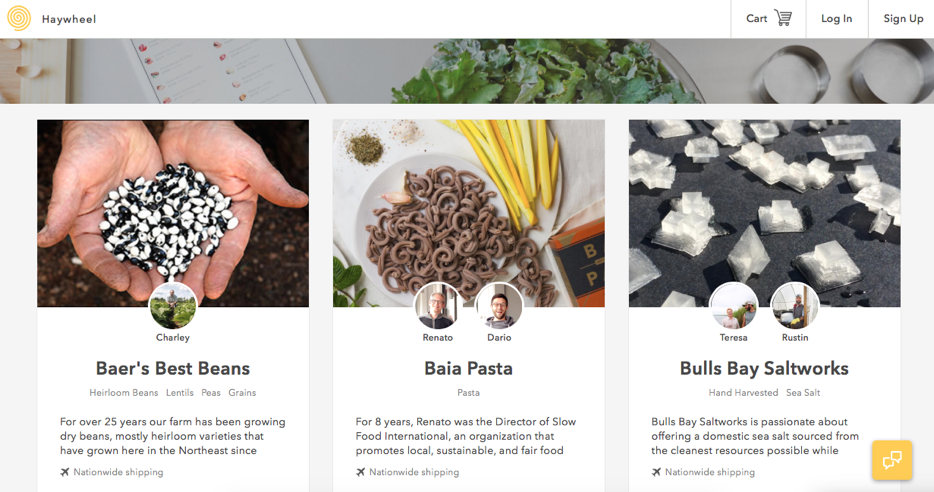
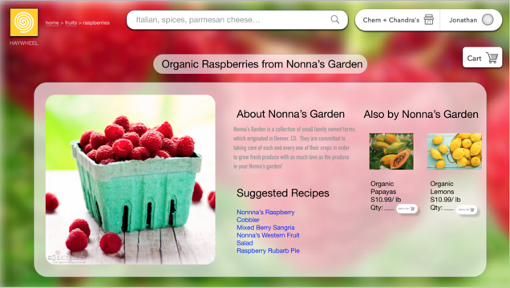

Haywheel - An aritisanal produce source for restaurants
Introduction
Haywheel is an artfully designed website with the mission of connecting restaurant owners with farms that provide artisan ingredients and products. We believe Haywheel could be a great resource for restaurants to seek out high quality products from small vendors and learn more about the ingredients they are purchasing. However, the current design of the website is not conducive for searching for and purchasing products. With the following redesign, we hope to improve the improve the navigability of the interface and create a more streamlined experience.

The original home page.
The Search Screen
The original front page of Haywheel, pictured above, immediately presents the user with every
product available in the form of stacked rows of vendors. This design really lowers the navigability of the interface; to find a specific item, the user will have to scroll through the entire list of products. Haywheel’s target user base consists of restaurant owners, and these owners most likely would have an idea of what type of product they are looking for when they get to the website. They therefore will not want to scroll through the items, but rather be able to search for a category of food or specific ingredient which they desire to buy. With that in mind, we redesigned the search page, as pictured below. Instead of bombarding the user immediately with many ingredients that may be unrelated to their search, we present them with two simple options: search, or browse all. This way the user can quickly find the products they are looking for, or alternatively, explore the different categories in an organized fashion.
The new search page which serves as the landing page.
Logging In
The interface that we went with for logging in was done to reduce unnecessary clutter compared to the original interface. When a user clicks login on the original, a modal box appears that asks for username and password inputs. This is bothersome since the user may click login and then decide to search/browse all instead. So we made it non-modal and have it expand from the login button location. Likewise, we wanted to make it clearer that there are current orders and past orders, since the original site doesn’t differentiate.
The log in box and account menu.
Browse All
The Browse All page.
The interface that we went with for logging in was done to reduce unnecessary clutter compared to the The creation of this screen was largely influenced by the Wizard of Oz test performed in class. In the creation of our paper prototypes, we targeted the greatest perceived weakness in the original interface: poor navigation. There was no way to sort or organize the products; rather, there was just one long list of vendors. We found that this was not a scalable model as the number of vendors increased, and would not be conducive to the growth of Haywheel. Thus, upon clicking browse all on the original screen, you are brought to a new screen that begins to organize products. This is done by category, with some suggestions at the top.
As mentioned before, the Wizard of Oz study was critical in designing this screen. We knew we wanted an intermediate screen to help users locate products, so our four different prototypes addressed this in different ways: Organized by cuisine, region, story, and category. As you can see, there is some influence of the cuisine option, but ultimately the category was the distinguished favorite of the four. This seemed to be the most logical segmentation for users, so we made this the main form of navigation.
The other critical design features on this screen include the use of images, the search bar, and the breadcrumb trail on the top left corner. One thing that was very good about the original interface was how it remained loyal to the product rather than to the sale. We hoped to incorporate this by making the images a clear focus of our screen, enticing users based off of the products. Furthermore, we felt this helped when creating categories in implicitly communicating the category. Although the categories have titles, this solidifies a visual image in the user’s mind. The breadcrumb trail was a means of communicating to the user where in our navigation they are. This also gives the user the option to return to a previous page they were on by name, rather than using the back button. Finally, the search bar is at the top to maintain consistency with our theory that the target user of this website is restaurants, many of which have a predetermined product they are looking for. This guided the search feature being the primary function of the home screen, but it is also critical to provide this functionality on other screens. Thus, we added a search bar at the top of all subsequent screens.
Fruit Category
When designing the category-specific pages, many of the same design principles from Part 3 came into play. This includes the breadcrumb trail, search bar, and home buttons at the top of the page. One design choice that is consistent with the browse all screen, but is increasingly relevant here is the add to cart button. Each product is given a unit price and you can choose to add to cart. This gives users who may not care to read the story the option to simply add the product right to their cart. This is important because on the previous screen, the products presented are suggestions. Now we are on a screen where the user sees products for exactly what they are looking for. Thus the add to cart button becomes important to have here.
Beyond that, this screen follows similar design principles as before, including blurred out background images to give the user an implicit visual aspect as to what they are looking at (in this case, a farm, representing the wholesome nature of these products). Furthermore, each product has a carefully selected photo to represent not only the product, but the artisanship that goes into it.
The Fruits category page.
Product Pages

The redesigned product page.
After choosing a product, we land on the product screen. This screen was designed with Haywheel’s original screen in mind. It was important to us to incorporate the stories behind the products on the actual product pages; we felt that if we did not, we would be violating the identity of Haywheel as more than just a provider of produce. Haywheel prides itself on connecting artisans to restaurants, and putting a story behind the products enhances this service. The following is an image of the original Haywheel interface for context on the story aspect.
The original product page.
Beyond this, we added further ways to connect the user to products, including suggested recipes, and other products by the same artisan. The further recipes would contain recipes with links to other products, in order to either guide or provide inspiration to users. The “Also By…” category was meant to tie in with the stories, because often times the product is not what is selling, it is the story. Thus, if a user enjoyed the story, it is possible they may want to by other products, or even just see what other products are offered. This section does that directly for the user.
Cart
The new Cart page.
After choosing all of the products they want to buy, the user arrives at the cart page, which presents them with a view of their cart. We wanted to preserve the simple design of the Haywheel site’s cart page, but add a few more important details about the products to provide the user with a more complete summary of their purchases. As you can see in the image below, for each item in the cart you can see the name, amount, shipping date, and price. The user can remove an item or change the quantity directly from this page, rather than having to click on the unintuitive quantity button from Haywheel’s original design, as pictured below. We chose to not include the farm information on the cart page, because it seemed to add clutter and confusion to the interface. When the user first navigated to the cart on the Haywheel site, only one farm appeared, and they would have to scroll down to see the second one. This could make the user think they were only purchasing from the first farm. Additionally, at this step in the process, we believe it is more important to know what products you are buying then to see an image of the farm you are buying them from.
The original Cart page.
Payment Screen
The new Payment screen.
After the user submits their cart, they are brought to the payments page. We did not stray too far from Haywheel’s payment form, preserving the basic layout of entering information and simply altering the page design to be more inline with the rest of our screens. We did make a few minor pages to improve the usability of the page; we added the image of different credit card logos at the top to inform the user of what cards were accepted by Haywheel, and we changed the filler text of the “Card Number” box to show the format in which the user is to enter their card number.
Conclusion
We really appreciated Haywheel’s mission of connecting restaurant owners with farms, showcasing the farm’s owners and stories. We believe our redesign would improve the usability of the website by allowing the user to more easily navigate Haywheel’s offerings and have a successful shopping experience.